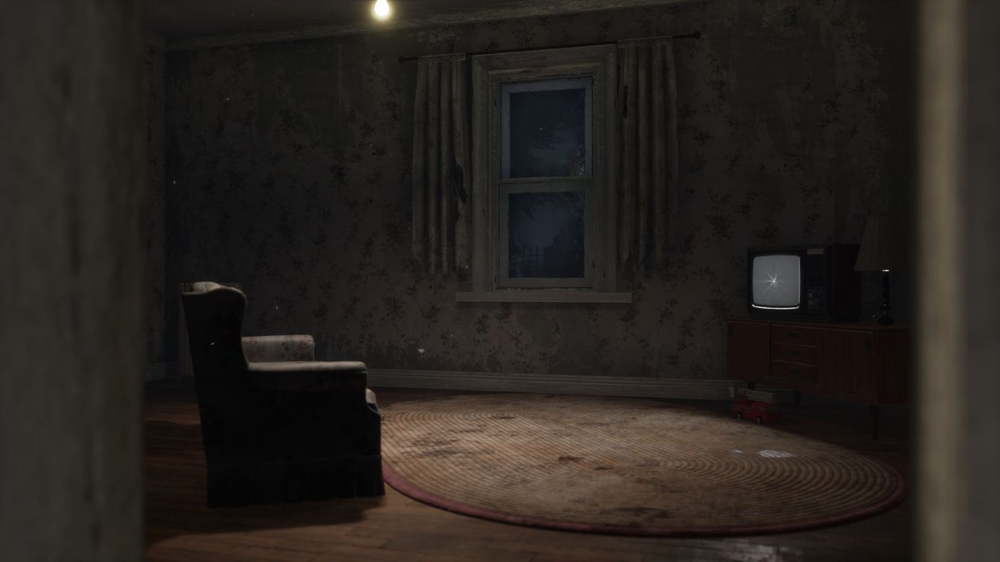

Welcome to the deadly game of hide and seek
killer vs survivor

base game character
1 Killer. 4 Survivors. Pick a Side
The Huntress
Armed with throwable hatchets, The Huntress is a constant threat to Survivors, even those at a great distance. With patience and precision, chases can end as quickly as they begin. Predict Survivor movement and let your hatchet fly - there's nothing quite like the rewarding sound of a target struck.
RoleKiller
DifficultyMedium
ChapterA Luulaby for the Dark
Power and Perks
HUNTING HATCHETS
Begin the trial with 5 Hunting Hatchets, which can be wound up and thrown with deadly precision. Hatchets can be refilled at lockers.
BEAST OF PREY
Lose your Terror Radius and Red Stain upon entering Bloodlust, making you difficult to predict while in a chase.

TERRITORIAL IMPERATIVE
When at a distance, view the aura of any Survivor entering the basement, making an already dangerous place even deadlier.
HEX: HUNTRESS LULLABY
Spawn a Hex Totem. Receive 1 token upon hooking a Survivor, with a max of 5. Each token increases the difficulty of skill checks for Survivors, with 5 completely removing the audio cue. Failed skill checks cause a severe regression penalty. All effects end when the Totem is cleansed.
The Nurse
Using her Blink ability, The Nurse can teleport great distances in moments, predicting and cutting off Survivor routes. A powerful process best honed by experience, careless Blinks are punished with a wave of fatigue. The epitome of high risk, high reward, The Nurse can end chases with surgical precision.
RoleKiller
DifficultyVery Hard
ChapterThe Last Breath
Power and Perks
SPENCER’S LAST BREATH
Charge a Blink to teleport a great distance, quickly gaining the ability to charge a second Blink. Once all charged Blinks are expended, The Nurse may elect to attack before she is briefly struck with fatigue.
STRIDOR
Hear Survivors breathing and grunts of pain louder than ever.

THANATOPHOBIA
Each injured Survivor inflicts a penalty to repairing, cleansing, and sabotaging speeds to all Survivors.

A NURSE'S CALLING
Reveal the auras of all healing Survivors within your vicinity.

The Trapper
Armed with a bag of Bear Traps, The Trapper specializes in catching unsuspecting Survivors. By placing traps in high-traffic areas and thick patches of grass, he creates a deadly area that forces Survivors to move with caution. When dealing with The Trapper, a simple misstep can prove fatal.
RoleKiller
DifficultyMedium
Power and Perks
BEAR TRAP
Begin a trial with 2 Bear Traps, with 6 additional Bear Traps randomly spawning throughout the map. The Trapper can only carry 2 Bear Traps at a time. Survivors can be caught in a Bear Trap and attempt to escape or be freed by a teammate. If a Survivor is healthy, being caught in a Bear Trap will put them in the injured state.

UNNERVING PRESENCE
Speed up the process of breaking pallets, destroying breakable walls, and damaging generators.

BRUTAL STRENGTH
Speed up the process of breaking pallets, destroying breakable walls, and damaging generators.
AGITATION
Allows The Trapper to move faster and cover longer distances while carrying Survivors. Carrying Survivors also increases your Terror Radius.
CLAUDETTE MOREL
Claudette understands the value of altruism, using her aptitude for botany to ensure her teammates are prepared for the challenges ahead. An expert healer to herself and others, Claudette’s supportive presence is always welcome.
RoleSurvivor
Perks
EMPATHY
Reveal the auras of all injured and dying Survivors in your vicinity, allowing you to efficiently heal teammates in need.
BOTANY KNOWLEDGE
Increase healing speed and healing item efficiency, saving precious time.
SELF-CARE
Unlock the ability to self-heal without a healing item, albeit at a reduced speed. Increases the efficiency of healing items while self-healing.
WILLIAM "BILL" OVERBECK
Hardened by years of experience, Bill Overbeck knows that survival rarely comes without sacrifice. No matter the cost, he’ll make sure his teammates live to fight another day. It wouldn’t be the first time he was left for dead.
RoleSurvivor
Perks
LEFT BEHIND
When you’re the last Survivor remaining in the trial, reveal the aura of the Hatch while in its vicinity.
BORROWED TIME
After rescuing a Survivor from the hook, that Survivor gains the Endurance status effect -- the ability to safely take a hit for a brief duration. Rather than being downed, that Survivor must instead take time to mend a Deep Wound.
UNBREAKABLE
Past battles have taught you a thing or two about survival. Once per trial, recover from being downed without aid from a teammate.
MEG THOMAS
Driven by reckless courage, the athletic Meg Thomas has never been afraid to push her limits. Prone to stepping up in the clutch, Meg gets a thrill out of goading Killers into lengthy chases, buying essential time for her teammates.
RoleSurvivor
Perks
QUICK & QUIET
The noise made when quickly vaulting obstacles and hiding in lockers is silenced entirely, disoriening a Killer mid-chase.
SPRINT BURST
The moment you begin running, break into a sprint and gain a burst of speed for a brief duration. Using Sprint Burst leaves you Exhausted, and thus, this perk cannot be triggered while Exhausted.
ADRENALINE
When the exit gates are powered, instantly heal one health state and gain a burst of speed. If hooked or carried by the Killer when Adrenaline activates, heal the moment you are freed. Causes the Exhausted status effect, though Adrenaline will still activate if Exhausted from a different perk.
learn to play
Killer Gameplay
basics
Though every Killer is unique their goals remain the same. Pick Survivors off one-by-one and sacrifice them to The Entity. Here are the basics to get you started.
learn to play
Survivor Gameplay
basics
Survivors may play different roles within a team, but their shared goal never changes. Evade the Killer and escape the trial. Here are the basics to get you started.
realms and maps

crotus prenn asylum
the last breath
When the asylum burned to a smouldering ruin, the ashes of the dead seeped into the soil. Faint traces of their sickly wails still linger in the air.

HADDONFIELD
halloween
Once an idyllic picture of suburban life, the simple street of Lampkin Lane was forever tarnished by unspeakable horror. The Shape of evil has returned -- and this is his home.
BACKWATER SWAMP
of flesh and mud
Decrepit shacks hide cells packed with bloated corpses, their fetid stench barely masked by the bog. Those lost in Backwater Swamp seldom return in one piece.
LÉRY'S MEMORIAL INSTITUTE
spark of madness
A former governmental black site where brilliant minds explored depraved innovations in electroshock and trauma-based therapy. The Doctor will see you now.
SPRINGWOOD
a nightmare on elm street
Some nightmares feel so real -- especially in Springwood. Forever tainted by its heinous past, even the innocent preschool has been defiled by unspeakable misery.
GIDEON MEAT PLANT
saw
The lair of the twisted visionary Jigsaw, hellbent on concluding his life’s work. Each macabre trap tells a story: a cautionary tale of life wasted and perspective gained.
ormond
darkness among us
The ski resort at Mount Ormond has long been abandoned. It endures as a favored haunt for rebellious youths seeking to indulge in violent proclivities.
grave of glenvale
chains of hate
They say restless ghosts haunt the old Dead Dawg Saloon, victims of a massacre where gang members and civilians were torn apart in a hail of gunfire.
Sign-up & get 100k Bloodpoints
Get all the latest Dead by Daylight news, updates, deals, and more delivered straight to you inbox.
Email Adress
By clicking on Sign Up, I confirm that I am 18 years old or over and that I accept BHVR’s Privacy Policy and Terms of Use. Receive the Bloodpoints on November 28th, 2023.